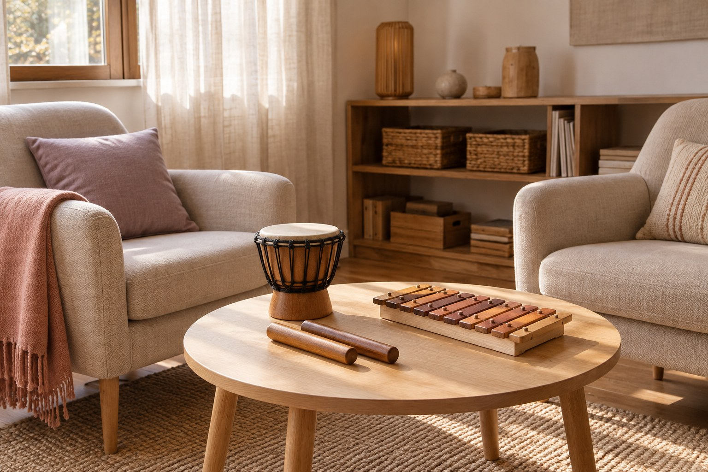

Contatti
Cominciamo da un incontro.
Ogni richiesta ha il suo punto di partenza. Raccontami cosa stai cercando.
Un primo contatto.
Per un percorso di musicoterapia, una lezione di flauto o una collaborazione artistica, puoi scrivermi o chiamarmi.
Telefono
+39 340 742 5037Dove incontrarci.

Materiale da inserire
Sedi
Gli indirizzi e le modalità degli incontri saranno aggiunti dopo la conferma di Yasmin. La fotografia è illustrativa.